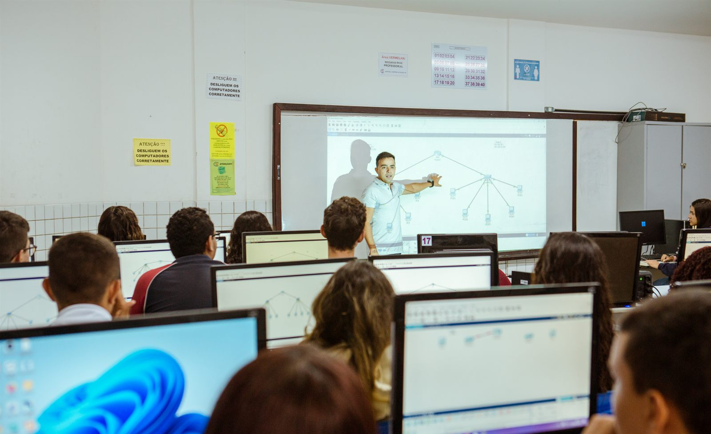

Rede Estadual de EPT do Rio Grande do Norte
Cursos Técnicos Integrados ao ensino médio em escolas, CEEPs e IERNs de todo o estado, formando para o trabalho, a ciência e a vida.
O que é a EPT?
É a educação que prepara para o trabalho sem deixar de lado a formação geral. Na rede estadual do RN, ela acontece em cursos técnicos de nível médio, gratuitos, que dão diploma de técnico válido em todo o país.
O estudante aprende a teoria em sala e a prática em laboratórios, aulas de campo, projetos e estágios, ligados às atividades econômicas da sua região. A rede também executa programas federais de qualificação, como o Mulheres Mil.
Onde estudar
-
Escolha um curso
São 18 cursos técnicos, de Informática e Edificações a Agroecologia e Energias Renováveis, em 145 unidades da rede.
-
Estude na forma que cabe na sua etapa
- Integradopara quem terminou o 9º ano
- EJATECpara jovens e adultos que não concluíram o ensino médio
- Concomitantepara quem está cursando o ensino médio
- Subsequentepara quem já concluiu o ensino médio
-
Aprenda fazendo
Aulas práticas, projetos integradores, visitas técnicas e estágio aproximam a escola do mundo do trabalho.
-
Saia com o diploma de técnico
No integrado e na EJATEC, você também conclui o ensino médio e pode fazer o Enem e seguir para a universidade.
Conheça a EPT potiguar
Por trás de cada número, um futuro em construção.
Laboratórios, aulas de campo, projetos integradores e estágios: é assim que a formação técnica acontece na rede estadual, da capital ao interior.
Ver boas práticas




Mulheres Mil: qualificação que vira autonomia
Além dos cursos técnicos, a rede estadual executa programas federais de qualificação. Entre 2023 e 2025, o Mulheres Mil teve 3.040 vagas aprovadas na rede, para mulheres em situação de vulnerabilidade de 42 municípios.
Quem passou pela EPT conta
“O curso técnico impacta diretamente na sua vida — mas você tem de saber usar o que tem em mãos. Hoje, estou estudando e trabalhando na área.”
“Muita coisa que a gente vê no curso prepara a gente para o mundo do trabalho. Saímos preparados para aproveitar as próximas oportunidades que conquistamos.”
Acompanhe a SUEP no Instagram
Notícias, seminários, visitas técnicas e o dia a dia da Educação Profissional no RN.